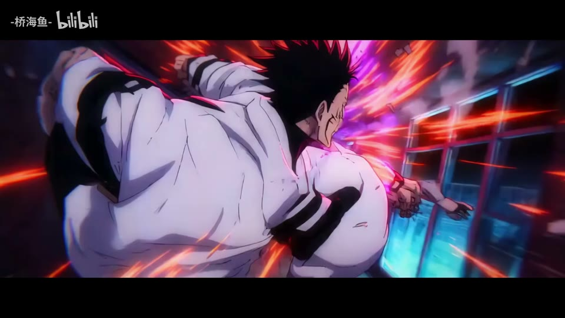

AI43类型专题 · 意象、色彩与纪实
用素材建立新联系
素材的意义取决于相邻镜头。动作、视线、颜色、形状与主题都能成为连接线；优质摄影是输入，选材关系才是剪辑者的增量。
先问这个问题
两个镜头为什么必须相邻？是共享意象、动作阶段、色彩，还是只是都很好看？
适合什么内容
纪念混剪、品牌回顾、旅行、纪录短片、情绪随笔、多来源素材的主题表达。
容易失效的地方
随机美景拼盘；片源色温和字幕层级混乱；把摄影、景深和原片特效都写成新增能力。
做一次小练习
用六个不同来源的画面分别按“同动作、同颜色、同主题”排三版，写下每版新增的含义，而不只说顺滑。
用观察表复盘 →